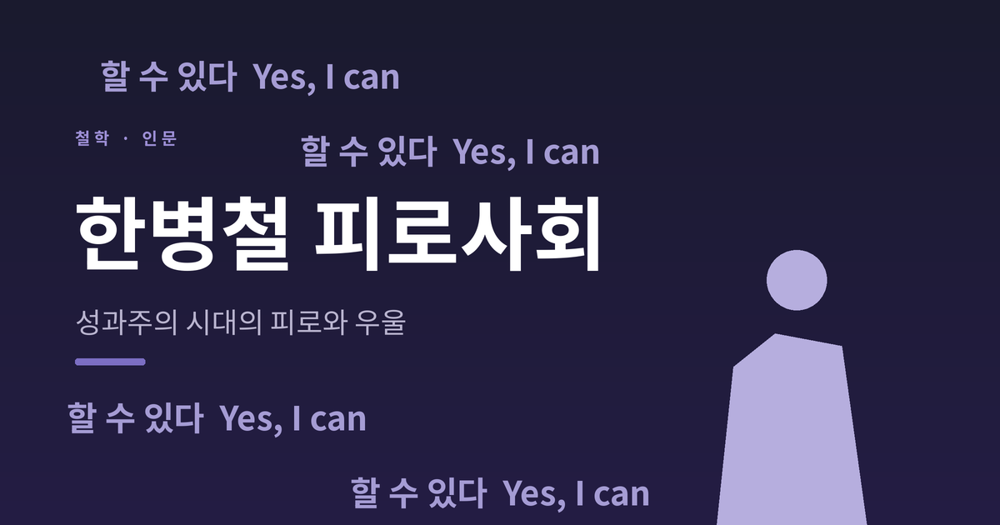
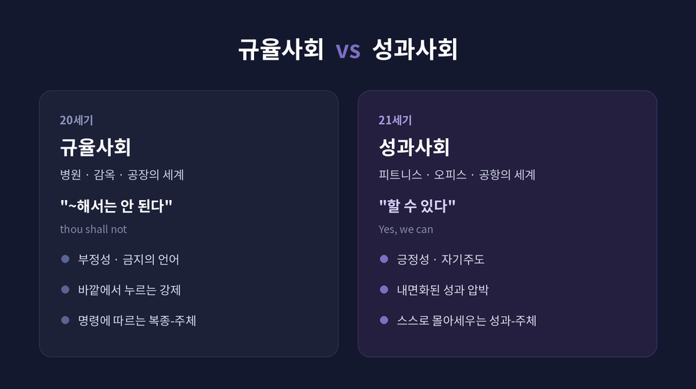
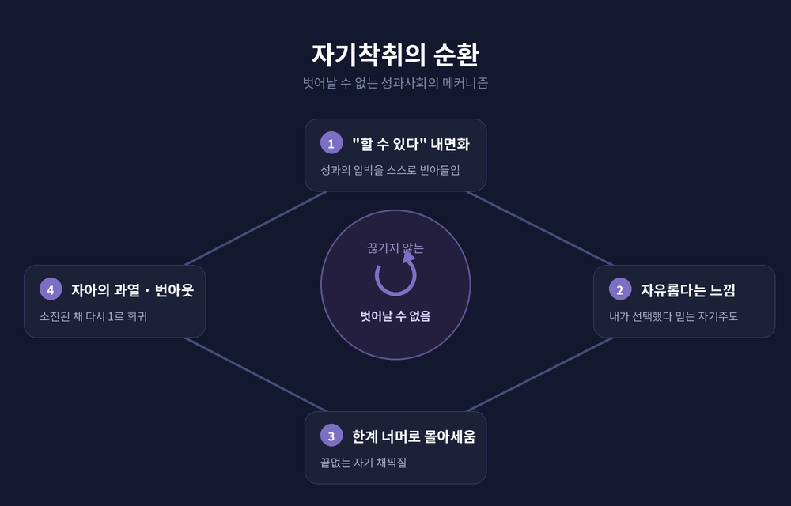

오늘은 한병철의 『피로사회』를 정리해 보겠습니다.
핵심부터 말씀드립니다. 한병철은 이 시대의 피로와 우울을 누가 시켜서가 아니라 스스로를 몰아세운 결과로 봅니다. 외부의 금지가 사라진 자리를 "할 수 있다"는 성과의 압박이 채웠고, 그 끝에 번아웃과 우울증이 있다는 진단입니다. 2025년 그가 아스투리아스 공주상을 받으면서, 이 진단은 지금 더 유효하다는 평가를 공식적으로 얻었습니다.
한병철은 1959년 서울에서 태어났습니다.
고려대에서 금속공학을 전공한 뒤 독일로 건너가, 프라이부르크와 뮌헨에서 철학과 독일문학, 신학을 공부했습니다. 1994년 하이데거 연구로 박사학위를, 2000년 데리다 연구로 교수자격을 얻었습니다. 이후 베를린예술대학교에서 철학·문화학을 가르쳤습니다.
그는 "독일에서 가장 주목받는 문화비평가"로 불립니다. 글이 짧고 응축적인 '철학 에세이' 형식인 것이 특징입니다. 2010년 독일에서 펴낸 『피로사회』는 큰 반향을 일으켰고, 2012년 한국에 소개되며 '올해의 책'으로 꼽혔습니다.
2025년에는 스페인 아스투리아스 공주상 커뮤니케이션·인문 부문을 수상했습니다. 심사위원회는 그의 글이 "비인간화, 디지털화, 개인의 고립"을 다루며 여러 세대 독자에게 반향을 일으켰다고 평가했습니다.

한병철의 출발점은 단순합니다.
"모든 시대에는 그 시대 고유의 질병이 있다." 책의 첫 문장입니다. 세균의 시대는 항생제로, 바이러스의 시대는 면역기술로 지나갔습니다. 그는 21세기를 '뉴런'에 의해 규정되는 시대로 봅니다.
예전의 사회는 푸코가 말한 규율사회였습니다. 병원과 감옥, 병영과 공장의 세계입니다. 지배의 언어는 "~해서는 안 된다"는 금지였고, 그 주체는 명령에 복종하는 사람이었습니다.
지금은 다릅니다. 피트니스 센터와 오피스 빌딩, 공항과 쇼핑몰의 세계로 바뀌었습니다. 명령은 "할 수 있다"로 변했습니다. 그 주체는 스스로 성과를 내야 하는 '성과-주체'입니다.
핵심은 통제의 위치가 바뀌었다는 점입니다. 바깥에서 누르던 강제가 사라진 자리를, 내가 내면화한 성과 압박이 대신합니다.
성과사회는 자기착취의 사회입니다.
과거의 착취는 누군가가 다른 누군가를 쥐어짜는 구조였습니다. 지금은 '성공한 인간'이 되기 위해 내가 나를 번아웃에 이를 때까지 착취합니다.
한병철은 여기에 역설이 있다고 말합니다. 자기착취는 타자착취보다 더 효율적입니다. 거기에 '자유롭다는 느낌'이 따라붙기 때문입니다. 스스로 선택했다고 믿기에 저항이 생기지 않습니다.
그 결과 착취하는 자와 착취당하는 자가 같은 사람이 됩니다. 가해자와 피해자를 더는 구분할 수 없습니다. 현대인은 피로사회의 피해자인 동시에 가해자인 셈입니다.
그는 이것을 "자유로운 강제"라고 불렀습니다. 한계 너머로 자신을 밀어붙이면서도, 그 압박을 자기 의지로 착각하는 상태입니다.

한병철의 가장 유명한 명제는 이것입니다.
우울증은 과잉 긍정성으로 고통받는 사회의 질병이다.
20세기의 병은 면역학적이었습니다. 안과 밖, 친구와 적, 자기와 타자를 분명히 나누는 시대였습니다. 냉전이 그 전형입니다. 그러나 21세기의 병은 다릅니다. '이물질'이라는 타자의 부정성이 아니라, '같은 것'의 과잉에서 옵니다.
그가 꼽는 이 시대의 질병은 우울증과 ADHD, 경계성 인격장애, 번아웃 증후군입니다. 이것들은 감염이 아니라 경색에 가깝습니다.
번아웃에 대한 그의 설명은 이렇습니다. 번아웃은 자아가 과열될 때 일어납니다. 끊임없는 과잉활동의 'hyper'는 긍정성의 대량화라는 것입니다.
우울증에 대한 진단은 더 날카롭습니다.
'아무것도 가능하지 않다'는 우울한 개인의 호소는, '불가능은 없다'고 믿는 사회에서만 일어날 수 있다.
무한한 '할 수 있음'의 압박이 결국 자기를 벌하는 우울로 되돌아온다는 이야기입니다.
한병철은 멀티태스킹을 미덕으로 보지 않습니다.
오히려 퇴행으로 봅니다. 끊임없이 주의를 분산해야 하는 능력은, 야생에서 포식자를 경계하는 동물에 가깝다는 것입니다. 멀티태스킹은 깊은 주의를 '과잉주의'로 바꾸고, 그 끝은 소진입니다.
반대로 인류의 문화적 업적은 깊고 사색적인 주의에서 나왔다고 그는 말합니다. 철학도 그렇습니다.
그래서 그는 '깊은 심심함'을 다시 평가합니다. 발터 벤야민을 따라, 깊은 심심함을 "꿈의 새를 품는 둥지"이자 창조성의 원천으로 봅니다. 창조는 분주함이 아니라 이완에서 솟아납니다.
그가 내놓는 처방은 '사색적 삶'의 복권입니다. 한나 아렌트와 니체가 예찬한 '활동적 삶'을 비판하고, 경이감을 바탕으로 한 사색의 자리를 옹호합니다. 또한 피터 한트케를 빌려, 소진적 피로와 다른 '근본적 피로'를 제시합니다. 이 피로는 세계에 다시 경이를 불러오고, 타자를 향한 우애와 공동체의 자리를 엽니다.
이 책이 지금 더 읽히는 이유가 있습니다.
자기계발 열풍과 '허슬 컬처'를 떠올려 봅니다. 우리는 권위에 저항하는 대신 그것을 내면화해, 자신의 소진을 야망처럼 빛나게 닦습니다. 멀티태스킹과 끊임없는 알림, 편의의 기술이 우울과 주의력 문제를 부추긴다는 그의 진단은 스마트폰과 알고리즘 피드의 시대와 곧장 맞닿습니다.
여기서 한 가지는 신중하게 짚겠습니다. 한병철이 'AI'를 직접 지목해 분석했다는 1차 근거는 확인되지 않았습니다. 다만 그가 분석한 성과·자기최적화·과잉생산성의 구조는, 2026년의 AI 생산성 도구와 자기최적화 흐름에 충분히 겹쳐 읽힙니다. 단정이 아니라 해석으로 받아들이시면 좋겠습니다.
물론 비판도 있습니다. 모든 것을 '주체의 자기착취'로 환원하면 계급과 구조의 문제가 가려진다는 지적이 국내에 있습니다. 짧은 팸플릿 형식이라 논증이 성기다는 평, 병의 원인을 지나치게 단순화한다는 임상적 비판도 따릅니다. 그럼에도 시대의 감정을 정확히 포착한 '시대 진단'이라는 점은 비판자들도 인정합니다.
결국 남는 것은 하나입니다.
피로사회의 가장 무서운 점은, 나를 몰아세우는 손이 다름 아닌 내 손이라는 사실입니다.
"불가능은 없다"고 믿는 사회에서 잠시 멈춰 심심해질 수 있다면, 그 멈춤이 오히려 회복의 시작일지도 모르겠습니다.